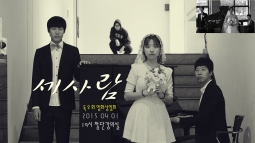

의학과
북새

Click하면 동아리 소개를 볼 수 있어요!
안녕하세요. 저희 동아리는 풍물 동아리 북새 입니다.
저희 동아리는 이제 창설 30주년이 다가오고 있는 전통있는 동아리입니다.
저희 동아리 이름인 북새의 뜻은 무엇일까요? 바로 "북을 쳐라, 새벽이 온다" 입니다.
저희는 풍물을 하면서 매 년 2학기에 정기 공연을 하고 있습니다.
물론 그 공연을 준비 하기 위하여, 여름방학때 짧게 모여 재밌게 연습을 합니다.
그 외에도 2년마다 기후대에서 교환 학생이 올때 , 저희의 풍물 문화를 소개하기도 하고, 올해에는 처음으로 '동문 한마당'에서 선배님들 앞에서 공연도 하게 되었습니다.
그렇다고 저희가 풍물만 하는 것은 아닙니다. 풍물도 정말 중요하지만. 저희는 의대 동아리 이기 때문에, 선후배간 그리고 동기들간의 관계가 정말 중요하다고 생각하여, 꾸준히 만남을 가지며 친목도모를 하고 있습니다.
소리그리메
Click하면 동아리 소개를 볼 수 있어요!
소리그리메는 충북의대의 합창동아리 입니다.
소리그리메는 '소리 그림자'라는 뜻으로 그림자처럼 음악도 항상 우리곁에 존재하며 우리의 삶을 더욱 풍성하게 해준다는 뜻을 담고있습니다. 합창을 접해보신적이 있으신지요? 내 자신이 내는 목소리가 다른사람의 목소리에 쌓여 화음을 만들고 노래를 만듭니다. 음악의 일원이 되어 함께 노래하는 기분은 어디에서도 느낄수없는 소중한 경험이 될것입니다.
또한 합창뿐 아닙니다. 서로 노래로 화음을 맞추어가며 만들어가는 교우관계에선 다른데서 얻을수있는 친밀함과 비교되지 못하는 끈끈함을 얻을 수있습니다 정말 가족같은 분위기 속에 노래할수 있는곳이 저희 소리그리메 입니다.
같이 노래하고 때로는 농담을 주고받는 화목한 자리를 가지며 의대를 다니는 중 가장 큰 추억거리를 만들고 가시기 바랍니다
>ALIVE (충북의대 ROCK 밴드)
Click하면 동아리 소개를 볼 수 있어요!
☆ ALIVE (충북의대 ROCK 밴드) ALIVE는 충북의대 유일의 ROCK 밴드 동아리로서 밴드음악을 함께 연주하고 공연함으로써 음악을 즐기고 사람도 함께 즐길 수 있는 동아리입니다.
매년 3월 신입생공연과 9월 정기공연을 하고 있으며, 6월과 12월에는 얼라이브만의 미니콘서트공연을 하고 있습니다. 현재 예과 1학년이 얼라이브 25기로 역사와 전통을 자랑하고 있습니다.
각 기수별로 보컬, 드럼, 일렉 기타, 베이스 기타, 키보드로 파트가 나누어져 있고 매학기 두번의 공연과 의대 수의대 간호대 약대가 함께 하는 LIFE 공연도 진행을 하여 많은 밴드 활동을 즐길 수 있습니다.
아마추어인 우리 학생들이 어떤 프로들의 공연들과 비교해도 밀리지 않는 관객들의 호응 속에서 공연을 할 수 있는 기회는 이곳에 밖에 없고, 이 기분을 느껴본다면 얼라이브에 빠질 수 밖에 없다고 자신합니다.
독우회

Click하면 동아리 소개를 볼 수 있어요!
독우회란 책의 벗이라는 뜻으로 원래는 책을 읽는 동아리였지만, 현재는 영화동아리로서 활동하고 있습니다.
단순히 웃고 즐기기 위한 영화가 아닌, 한편의 문학작품을 읽은 것처럼 감동과 깊이 있는 영화를 회원들과 함께 감상합니다.
1년에 한 번 독우회 회원이 아닌 분들과도 좋은 영화를 공유하고자, 영화제를 열고 있습니다.
그리고 단편 영화를 재밌게 찍어 좋은 추억을 남기기도 합니다.
단란하고 편안한 분위기의 독우회의 문은 항상 여러분에게 열려있습니다.
메디아몬드 (야구 동아리)
Click하면 동아리 소개를 볼 수 있어요!
메디아몬드는 충북대 의대와 함께 해온 의대 유일의 야구 동아리입니다. 야구란 여러 팀원들이 유기적인 움직임이 필요한 운동으로 호흡이 맞지 않으면 하기 힘든 스포츠입니다.
메디아몬드는 구성원들간의 우정과 사랑을 제일의 목표로 삼고 이를 토대로 야구를 즐기면서 하는 동아리입니다.
이를 통해 구성원들간에는 서로 끈끈한 말할 수 없는 그 무언가로 뭉칠 수 있게 해줍니다.
또한 저희 메디아몬드는 타학교의 의대와의 시합을 정기적으로 하고 있고,
충북대학교 내의 타과와 시합을 가져 인간관계가 좁아질 수 있는 의대생들에게 야구를 통한 다른 사람과의 만남을 통해서 인간관계를 넓히고 사회성 또한 높일 수 있는 동아리입니다.
여러 구성원이 한가지 목표를 향해 열심히 달리고, 힘들 때 도와줄 수 있는 자신의 등을 맡길 수 있는 사람이 필요하다면 그 사람을 찾을 수 있는 곳이 충북의대 야구동아리 메디아몬드입니다.
메아꿀빠 (Mea culpa, 카톨릭 동아리)
Click하면 동아리 소개를 볼 수 있어요!
메아꿀빠(Mea culpa)는 충북대 의과대학 내 카톨릭 동아리입니다.
Mea culpa는 '내탓이오'라는 뜻의 라틴어로, 고백의 기도 중 한 구절을 따 온 것입니다.
자신에 대해 반성하는 마음을 바탕으로, 다른 사람에게 사랑을 나눠 줄 수 있는 사람이 그리고 모임이 되기 위한 것이 저희 동아리의 취지입니다.
현재는 주로 사창동 천주교회에서 미사를 드리고 있습니다.
Mea culpa가 천주교 동아리인 만큼 천주교인들이 가입해야겠지만, 꼭 천주교 교인이 아니더라도 관심이 있으신 분들은 언제나 환영입니다.
카톨릭이 '보편'이라는 뜻인 만큼, 저희는 종교에 따라 사람이나 사상을 굳이 구분지어 나눌 생각은 없습니다.
1주일에 한 번이라도 자신에 대해서 생각해보고 반성하면서 주변의 모든 것들에게 감사드리고 사랑을 나누고 싶으신 분들이 있으시다면 언제든지 환영입니다.
보득솔 (충북대학교 의과대학 봉사 동아리)
Click하면 동아리 소개를 볼 수 있어요!
안녕하십니까? 충북대학교 의과대학 교육봉사동아리 보득솔입니다.
“보득솔”이란, “키가 작고 가지가 많은 어린 소나무”를 가리키는 말로, 아이들이 훌륭하게 자라나길 바라는 마음을 나타내는 우리 동아리의 이름입니다.
현재 보득솔은 학기 중에 청주시에 위치한 그룹홈과 지역아동센터에서 교육봉사활동을 하고 있습니다.
우리는 아이들과 함께 공부하는 선생님이 되고, 아이들의 고민을 들어주는 멘토도 되고, 또 다른 때에는 형제자매가 되어 함께 놀기도 하며, 사랑을 주고받는 가족도 됩니다.
매주 시간을 내어 봉사를 가는 것이 학업에 시달리는 의대생에겐 약간 부담이 되는 것일 수 있지만, 우리 보득솔이 이렇게 큰 동아리로 남아있는 건 모두 우리가 하는 일이 결코 헛된 것이 아님을 알고, 아이들을 사랑하는 마음이 있기 때문일 것입니다.
따뜻한 사랑을 나누고 싶으신 분들은 따뜻한 사람들이 모인 동아리 보득솔을 찾아주세요!
스매싱 (운동동아리 스매싱)
Click하면 동아리 소개를 볼 수 있어요!
안녕하세요.충북의대 테니스동아리 스매싱(smashing)입니다.
저희는 2주에 한번 금요일마다 훈련을 하고 있습니다.
다른 구기 종목에 비해서는 테니스를 처음 접해보는 학생들이 많겠지만, 선배들이 기본기부터 차근차근 잘 가르쳐주기 때문에 한 학기만 지나도 금방 테니스 실력을 키울 수 있습니다.
또한 훈련을 하면서 동아리 동기, 선·후배들 간의 단합을 키울 뿐만 아니라, 여름에는 전국 9개 국립의대 테니스 대회에 참가하고 겨울에는 중부권 예비의료인 테니스대회에 참가하는 역사 깊은 동아리입니다.
2014년 국립의대 대회 준우승, 2017년과 2019년 중부권 예비의료인 대회 우승을 차지하는 등 좋은 분위기를 유지하고 있습니다.
저희 스매싱의 일원이 되어 세계적인 인기 스포츠인 테니스의 매력에 빠져보시기를 바랍니다!
아스컴
Click하면 동아리 소개를 볼 수 있어요!
아스컴은 충북의대의 컴퓨터 동아리입니다.
현재 병리학교실 이호창 교수님의 지도하에 학생들의 컴퓨터 활용능력을 키우기 위해 컴퓨터 교육을 시행하고 있습니다.
여름방학, 겨울 방학을 이용해 한 주 동안 멀티미디어를 통한 교육을 시행하고 있으며, 또한 학기 중의 활동을 통해서 선후배간의 우정을 쌓아갈 수 있습니다. 아스컴의 목표는 동아리 회원의 컴퓨터 활용 능력을 발전시키는데 있으며, 많은 학생들이 이에 긍정적으로 호응하고 있습니다.
아스컴의 회원이 되시면 아스컴 band에 가입하게 되며, band를 통해 아스컴의 선후배님들과 함께 소통할 수 있게 됩니다.
육현 (육현(six strings))
Click하면 동아리 소개를 볼 수 있어요!
동아리 육현은 충북대학교 의과대학에서 가장 먼저 설립된 동아리중 하나로, 클래식 기타를 사랑하는 사람들의 모임입니다.
육현(six strings)이라는 동아리 이름의 의미는 클래식 기타의 여섯 줄에서 유래한 것입니다.
육현은 1986년 05월 15일 창단되었고 지도교수님과 많은 선배님들, 재학생들의 활발한 참여와 가족 같은 분위기로 지금까지 많은 활동을 하고 있습니다.
봄 신입생 연주회와 가을 정기연주회로 일년에 두번의 정기공연을 하고 있습니다. 충북지역의 다른 클래식 기타 동아리와도 많은 교류를 하고 있습니다.
많은 수업과 바쁜 의대 생활 속에서도 클래식 기타의 부드러운 선율을 통해서 우리는 많은 것을 느끼고 또 얻고 있습니다.
간호학과
심(心)봉사 (봉사동아리)
Click하면 동아리 소개를 볼 수 있어요!
심(心)봉사는 항상 진실한 마음으로 봉사한다는 뜻을 가진 이름의 충북대학교 간호학과 봉사 동아리입니다. 우리가 간호사로서 의료계에 종사할 때 환자에 대한 책임감과 상대방에 대한 배려, 커뮤니케이션 기술과 진심이 담긴 간호를 하기위한 자질을 길러내고자 뭉친 모임입니다. 한 부모 가정의 아이들과 고아원, 어르신들이 계신 요양원 등 우리보다 조금 어려우신 분들께 힘이 되기 위해, 봉사를 하는 그곳에서 기쁨과 보람을, 그곳에 계신 분들의 순수한 마음이나 인생의 교훈들 느끼고 싶은 사람들이 모였습니다.
현재는 월 2회 토요일마다 아동복지센터에서 아이들의 수학능력을 위하여 지도하는 봉사를 하고 있습니다.
멋진 간호인이 되고자 다른 사람을 위한 따뜻한 배려를 나누는 저희 심봉사 동아리와 함께 해주세요
가나연 (학술동아리)
Click하면 동아리 소개를 볼 수 있어요!
가나연은 멘토`멘티로 선후배간의 친목을 다진 다는 점과 간호학과에서 가장 아름다운 인연을 맺고 있는 동아리라는 점을 착안하여 ‘간호학과의 아름다운 인연’의 준말인 간아연을 발음하기 쉽게 변형한 것입니다.
현재 문제가 되고 있는 여러 가지 의료문제에 대한 학습과 토론을 바탕으로 구성원들 모두가 시대현실을 올바로 직시할 수 있게 함을 그 첫째 목표로 삼고 있습니다.
또한 가나연은 다양한 활동을 병행하고 있습니다.
개강 전 신입생들과 함께 학교 탐방을 하면서 애교심(愛校心)을 키우며, 멘토`멘티를 통해 선후배간의 친목을 다지고 고민거리를 스스럼없이 털어놓는 마음의 창으로서 구실을 하기 위해 노력하고 있습니다.
강력한 소속감을 바탕으로 동아리 구성원들 모두가 끈끈한 정으로 묶여있다는 점과 간호학과 최고의 인기동아라는 점이 자랑거리라고 할 수 있습니다.
>따봉 (봉사동아리)
Click하면 동아리 소개를 볼 수 있어요!
저희 따봉은 우선 이름만 들으면 웃음이 먼저 지어 지실 것입니다.
이름의 뜻은 표면적으로 최고라는 뜻도 있지만, 따뜻한 봉사의 줄임말로 예비 간호사로서 우리가 가져아할 마음가짐 중 따뜻한 마음을 소양하고자 만들어졌습니다.
저희 동아리는 정기적으로 노인 센터를 방문하여 봉사를 하고 있으며 현 고령화 사회에 보탬이 될 수 있는 간호사가 될 수 있도록 노력 하고 있습니다.
방학 중에는 농촌으로 일손이 부족한 농가를 방문하여 일손을 도우려 하고 있습니다.
저희 동아리는 예비 의료인으로서 가져야할 봉사정신과 사회에 공헌하는 마음을 만들도록 노력하고 있습니다.
또한 저희 동아리는 사회봉사뿐만이 아닌 동기들과 선후배간의 정을 쌓는데 노력하는 동아리입니다.
씨밀레

Click하면 동아리 소개를 볼 수 있어요!
씨밀레는 충북의대의 간호학과 노래동아리입니다.
‘씨밀레’의 의미는 우리나라 고유어로 '영원한 우정'이라는 뜻입니다.
이름만큼 동아리원끼리 우정이 돈독하고 따뜻한 분위기입니다. 간호학에 뜻을 품고 힘들게 공부하는 중에 노래에 관심이 있고 애정이 있는 사람들이 함께 모여서 활동을 한다면 큰 행복이 되겠지요?
대학교에 들어오기 전에는 경험하기 힘들었던 아카펠라를 함께 하면서 화음도 맞춰보고, 팀을 구성하여 대회도 출전 할수 있습니다.
좋은 사람들과 노래를 하면서 웃을 수 있는 씨밀레. 힘들고 어려운 간호학을 공부하는 일상에 큰 활력소가 될 것입니다.
장구벌레
Click하면 동아리 소개를 볼 수 있어요!
저희 동아리는 의과대학 간호학과 풍물패 ‘장구벌레’입니다. 여기서 장구벌레는 모기의 유충을 뜻 하는 것이 아니라 공부벌레, 책벌레처럼 장구를 치는 것에 열중한다는 대유의 의미를 담고 있습니다. 저희는 우리 전통 타악기를 통해 흥겨운 우리 장단 속에서 서로 호흡을 맞추어가며 화합을 도모합니다.
저희와 함께 풍물패 활동을 하며 우리 장단의 흥겨움을 느낄 수 있고 신명나게 한바탕 놀아봄으로써 학업에서 또는 일상에서의 스트레스를 풀어버릴 수 있습니다. 더불어 좋은 인연을 맺고 친목도 도모할 수 있습니다.
풍물패 장구벌레는 서양음악에 밀려나 제자리를 찾지 못하고 있는 우리 전통 음악의 우수성을 널리 알리고자 노력하겠습니다. 감사합니다!^.^!
팝콘(영화동아리)
Click하면 동아리 소개를 볼 수 있어요!
안녕하세요. 간호학과 영화동아리 팝콘입니다.
영화하면 팝콘이라는 생각에서 동아리 이름이 나왔지만, 팝콘처럼 톡톡 튀는 개성 있는 동아리가 되었으면 하는 바람이 담겨있습니다.
팝콘에서는 매달 영화를 관람할 뿐만 아니라 문화에 관한 전반적인 소비와 나눔을 위한 활동을 하고 있습니다.
그리고 간호학과 학우들을 대상으로 1년에 한번 정기적으로 상영회를 열고 있습니다.
또한 페이스북 페이지에는 다양한 행사도 기획, 진행하고 있습니다.
훈울(기자단동아리)
Click하면 동아리 소개를 볼 수 있어요!
안녕하세요? 저희는 간호학과 기자단 동아리 훈울입니다.
훈울은 ‘사람소리’라는 순 우리말 단어입니다. 사람들의 소리를 듣고, 그 소리를 담아 사람소리가 나는 신문을 만들겠다는 의미로 훈울이라는 이름을 갖게 되었습니다.
저희는 동아리 이름 뜻처럼, 간호학과의 크고 작은 소식을 모아 편집하여 충북대학교 간호학과의 소식지를 만드는 동아리입니다.
충북대학교 간호학과가 신설되면서부터 시작하여 매 년마다 한 해의 간호학과의 대소사를 기사로 작성하고, 봉사후기부터 실습후기, 면접후기 등을 실어 실질적으로 많은 도움이 되는 컨텐츠들을 담아 소식지를 제작하고 있습니다.
소규모 동아리이며, ‘소식지’라는 결과물을 만들어 내는 동아리인 점에서, 동아리 분위기가 화목할 뿐만 아니라 완성작이 나오면 동아리원 모두가 굉장히 뿌듯함과 자부심을 느끼곤 합니다.
NB(밴드동아리)
Click하면 동아리 소개를 볼 수 있어요!
저희 동아리는 의과대학 간호학과 밴드 "엔비"입니다!
글자그대로의 NB로 Nursing Band의 뜻도 있지만, 발음대로의 Envy, 즉 누구나 부러워하는 밴드라는 뜻도 있습니다! 저희는 각자 맡은 세션(보컬, 키보드, 베이스, 기타, 드럼)들로 서로 곡을 맞춰가면서 서로 화합하고, 그런 화합을 바탕으로 매년 9월 정기공연을 합니다.
악기를 전혀 다루지 못한 분이 오시더라도 가르쳐드리고, 따라서 선후배간 친밀도가 높을 수밖에 없습니다. 원래 의대 Alive밴드에 있다가 독립해 나온만큼, 더 재밌고 수준높은 밴드가 되겠습니다!!
땅볼(운동동아리)
Click하면 동아리 소개를 볼 수 있어요!
저희 동아리는 의과대학 간호학과 운동동아리 ‘땅볼’입니다.
저희 땅볼은 볼링과 배드민턴을 주 종목으로 활동하고 있습니다.
저희는 학과 공부에 열중하다보면 부족할 수 있는 신체 건강 활동을 증진시키기 위해 노력하고 있습니다,
정기적으로 정기전을 하면서 후배와 선배 간의 화합과 친목도모를 할 수 있고 시간이 날 때마다 같이 모여 볼링과 배드민턴을 치면서 스트레스도 풀 수 있습니다.
운동을 하면서 서로 이야기도 하다보면 선후배 간의 사이도 돈독해 지겠지요? 여름과 겨울에 하계, 동계 엠티도 가면서 서로를 더 많이 알아갈 수 있고 친해질 수 있는 동아리입니다.
앞으로도 의과대학 간호학과의 유일무이한 운동 동아리로써 선후배간의 화합과 신체 건강증진을 위해 더욱더 활발한 활동을 할 수 있도록 노력 하겠습니다. 사땅해~ 감사합니다!